Hyperbolic geometry exhibits geometric phenomena, such as fast area growth, that are difficult to visualize faithfully
in Euclidean space, and which standard models like the Poincare disk can obscure. To bring hyperbolic geometry ´
to life, we embed hyperbolic surfaces in Euclidean space by discretizing the surfaces into meshes, and minimizing
a distortion energy so that the edge lengths in the embeddings match those in the hyperbolic plane. The resulting
surfaces buckle and ruffle to accommodate the extra area, making visible what flat models hide. We present exemplary
illustrations, such as embedded disks, equidistant strips, diverging geodesics, and also artistic organic-like renders.
We discuss our use of these models, as renders and 3D prints, in research talks, public engagement, outreach, and
education.
双曲幾何学は、急速な面積の増大といった幾何学的現象を示しますが、これらはユークリッド空間内で忠実に可視化することが難しく、ポアンカレ円板のような標準的なモデルではその性質がかえって見えにくくなることがあります。双曲幾何学を具体的に表現するために、我々は双曲曲面をメッシュ状に離散化し、埋め込み後の辺の長さが双曲平面上の長さと一致するように歪みエネルギーを最小化することで、ユークリッド空間内への埋め込みを行いました。その結果得られる曲面は、増大する面積を収めるために波打ちやひだを生じさせ、平坦なモデルでは隠されてしまう性質を可視化します。本発表では、埋め込まれた円板、等距離帯、発散する測地線といった典型的な例に加え、有機的な形状を持つ芸術的なレンダリング画像も提示します。また、これらのモデルをレンダリング画像や3Dプリントとして、研究発表、一般向けイベント、アウトリーチ活動、教育の場で活用している事例についても論じます。
There are three geometries in which every point looks the same: the sphere, the Euclidean plane, and the
hyperbolic plane. Figure 1 shows all three, tiled in the pattern of a soccer ball. On the sphere, pentagons and hexagons fit together and close up. In the Euclidean plane, hexagons alone tile perfectly, extending forever.
In the hyperbolic plane, this pattern continues, from pentagons to hexagons to heptagons, each step adding
more area than in the Euclidean plane. Where Euclidean tilings grow flat, hyperbolic ones must buckle.
どの点から見ても同じように見える幾何学には、球面、ユークリッド平面、そして双曲平面の3種類があります。図1は、これら3つのすべてにおいて、サッカーボールの模様でタイリング（敷き詰め）を行った様子を示しています。球面では、五角形と六角形が組み合わさって全体が閉じます。ユークリッド平面では、六角形だけで隙間なく敷き詰められ、どこまでも広がっていきます。一方、双曲平面では、五角形から六角形、七角形へと模様が続いていき、段階が進むごとにユークリッド平面の場合よりも大きな面積が加わります。ユークリッド平面でのタイリングが平坦に広がるのに対し、双曲平面でのタイリングは歪みが生じ、波打つような形状になります。
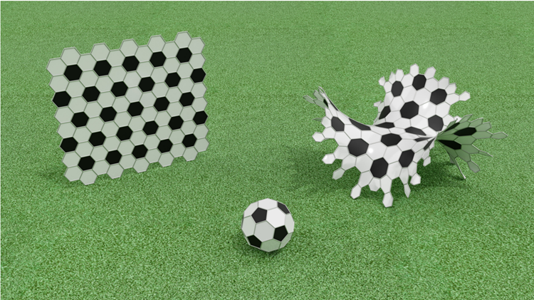
This extra area grows exponentially with distance, making hyperbolic geometry difficult to visualize.
Unlike the sphere, which embeds naturally in \(\mathbb{R}^3\)
, there are no known simple formulas for embedding regions
of the hyperbolic plane into Euclidean space. The hyperbolic tiling in Figure 1 has no closed-form embedding.
Computing embeddings numerically for such illustrations is the subject of this paper.
この余分な面積は距離とともに指数関数的に増大するため、双曲幾何学を視覚化することは困難です。
\(\mathbb{R}^3\) に自然に埋め込める球面とは異なり、双曲平面の領域をユークリッド空間に埋め込むための単純な公式は知られていません。図1に示す双曲タイリングについても、閉じた形式（数式）による埋め込みは存在しません。
本論文では、こうした図を作成するために、数値計算によって埋め込みを求める手法について扱います。
The desire to build accurate three-dimensional models is nearly as old as hyperbolic geometry itself. Shortly
after its discovery, mathematicians sought concrete models to work with. Beltrami provided the first: the
Beltrami-Klein disk and what we now call the Poincare disk, which represent the infinite hyperbolic plane ´
inside a bounded region. But like maps of the Earth, these models distort. Beltrami wanted the analog of
a globe—a physical surface correctly realizing hyperbolic geometry. He succeeded in constructing paper
models [1], including the pseudosphere (Figure 2). There is an explicit formula for part of this surface, as
a surface of revolution, but Beltrami’s paper models extend further, ruffling and crinkling where equations
give out.
正確な3次元モデルを構築したいという願望は、双曲幾何学そのものと同じくらい古くから存在していました。双曲幾何学が発見されて間もなく、数学者たちは研究の助けとなる具体的なモデルを求めました。ベルトラミは最初のモデルとして、「ベルトラミ・クライン円板」と、現在「ポアンカレ円板」と呼ばれているものを提示しました。これらは、無限に広がる双曲平面を有限の領域内に表現するものです。しかし、地球儀に対する地図と同様に、これらのモデルには歪みが生じます。ベルトラミが求めていたのは、双曲幾何学を正しく具現化した物理的な曲面、いわば「地球儀」に相当するものでした。彼は紙製のモデルを構築することに成功し[1]、その中には擬球（図2）も含まれていました。この曲面の一部については、回転面として記述する明示的な式が存在しますが、ベルトラミの紙製モデルはそれ以上に広がっており、数式による記述が及ばない領域では、ひだやしわが寄った形状になっています。
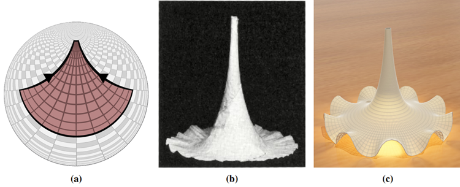
Figure 2: The pseudosphere: (a) as a region in the Poincare disk model, (b) Beltrami’s paper model ´
(1869–1872, Dept. of Mathematics, Pavia), and (c) our mesh embedding.
図2：擬球面：(a) ポアンカレ円板モデルにおける領域、(b) ベルトラミの紙製モデル（1869–1872年、パヴィア大学数学科）、および (c) 我々によるメッシュ埋め込み。
Since Beltrami, others have approached this challenge using methods ranging from immersive visualizations and VR to physical and rendered models. Our work belongs to the latter category, and we briefly
survey other works in this space. Henderson and Taimina’s crocheted hyperbolic planes [9] offer a tactile,
handmade alternative. Bulatov [3, 4] and Fathauer [7] explore computational and paper folding approaches
to hyperbolic tilings. Jackson and Williams [11] assemble Poincare disk tessellations into three-dimensional ´
models. Dunham [6] and Laigo et al. [14] analyze the geometry and symmetry of hyperbolic patterns.
Physical models of related geometries appear in work by Demaine et al. [5], Rousseau [15], and Swart [18].
Kopczynski and Celi ´ nska [ ´ 12] use energy minimization to embed surfaces for interactive VR exploration, a
technique also used in HyperRogue [13]. Our underlying approach is similar, and we target rendered illustrations, 3D-printable models, and more general meshes with physical constraints for artistic applications.
There is also prior work on embeddings of hyperbolic triangle tilings, often referred to as the Thurston model
of the hyperbolic plane [2]. Related constructions include Harriss’s physical polydron models [8], hinged
3D-printed realizations by Irving and Segerman that appear in [16], and paper models used in pedagogy and
outreach, such as those of Henderson [10] and Sottile [17].
ベルトラミ（Beltrami）以来、没入型可視化やVRから、物理的な模型やレンダリングされたモデルに至るまで、様々な手法を用いてこの課題に取り組む研究が行われてきました。本研究は後者のカテゴリーに属するものであり、ここでは関連する先行研究を簡潔に概観します。ヘンダーソン（Henderson）とタイミナ（Taimina）によるかぎ針編みの双曲平面 [9] は、触覚を伴う手作りの代替手段を提示しています。ブラトフ（Bulatov）[3, 4] やファサウアー（Fathauer）[7] は、双曲タイリングに対して計算機的アプローチや折り紙（ペーパーフォールディング）を用いたアプローチを試みています。ジャクソン（Jackson）とウィリアムズ（Williams）[11] は、ポアンカレ円板のタイリングを組み合わせて三次元モデルを構築しています。ダナム（Dunham）[6] やライゴ（Laigo）ら [14] は、双曲パターンの幾何学的性質や対称性を解析しています。関連する幾何学的形状の物理的モデルは、ドメイン（Demaine）ら [5]、ルソー（Rousseau）[15]、スワート（Swart）[18] の研究にも見られます。コプチンスキ（Kopczynski）とツェリンスカ（Celińska）[12] は、エネルギー最小化を用いて曲面を埋め込み、インタラクティブなVR探索を可能にしています。この手法は『HyperRogue』[13] でも採用されています。我々のアプローチもこれらと類似しており、芸術的用途に向けて、レンダリング画像、3Dプリント可能なモデル、さらには物理的制約を考慮したより一般的なメッシュの生成を対象としています。また、双曲三角形タイリングの埋め込みに関する先行研究もあり、これらはしばしば双曲平面のサーストン・モデル（Thurston model）[2] と呼ばれています。関連する構成例としては、ハリス（Harriss）による物理的なポリドロン（Polydron）モデル [8]、アーヴィング（Irving）とセガーマン（Segerman）によるヒンジ構造を用いた3Dプリント作品 [16]、そしてヘンダーソン（Henderson）[10] やソッティレ（Sottile）[17] のような、教育やアウトリーチ活動で用いられる紙のモデルなどが挙げられます。
Collectively, these works illustrate both the richness of and the technical subtleties involved in producing
such embeddings. While local or structured constructions are possible, extending them to large regions while
preserving intrinsic hyperbolic geometry is challenging, and no general method is known.
これらの一連の研究は、そのような埋め込みを生成することに伴う豊かさと技術的な機微の双方を明らかにしています。局所的あるいは構造化された構成法は可能ですが、本来の双曲幾何学的性質を維持しつつそれらを広範な領域へと拡張することは困難であり、一般的な手法は知られていません。
Our goal is to build models of regions in the hyperbolic plane (or surfaces built from hyperbolic geometry) as
physical surfaces in \(\mathbb{R}^3\)
. Explicit formulas for such embeddings are rare, so we need a simpler representation
to compute with. Our approach is to discretize: we divide the surface into a mesh, a network of vertices
connected by edges, forming faces. Each edge has a length, each face an area, and they meet at vertices at
measurable angles. This structure gives us a way to record the geometry of hyperbolic space in finite data.
私たちの目標は、双曲平面上の領域（あるいは双曲幾何学に基づいて構成された曲面）を、\(\mathbb{R}^3\) 内の物理的な曲面として構築することです。そのような埋め込みを記述する具体的な数式は稀であるため、計算を行うには、より単純な表現が必要となります。そこで私たちは「離散化」という手法をとります。具体的には、曲面をメッシュ（頂点を辺で結び、面を形成するネットワーク）へと分割するのです。このメッシュにおいて、各辺は長さを持ち、各面は面積を持ち、それらは頂点において測定可能な角度で接合されます。このような構造を用いることで、双曲空間の幾何学的性質を有限のデータとして記録することが可能になります。
In a model of the hyperbolic plane, we can compute these edge lengths exactly using the hyperbolic
metric. An embedding of the mesh into \(\mathbb{R}^3\)
assigns each vertex a position in space; the edges become line
segments whose Euclidean lengths we can measure. The embedding is accurate when these measured lengths
match the hyperbolic targets. This gives us an easy way to check any proposed embedding. Just measure and
compare. But it does not tell us how to construct one. The space of all possible vertex positions is vast, and
most configurations are wrong.
双曲平面のモデルにおいては、双曲計量を用いることで、これらの辺の長さを正確に計算できます。メッシュを \(\mathbb{R}^3\) に埋め込むと、各頂点に空間内の位置が割り当てられ、辺は線分となります。その際、ユークリッド距離としての長さを測定することが可能です。測定された長さが双曲平面上での目標値と一致すれば、その埋め込みは正確であると言えます。これにより、提案された埋め込みが適切かどうかを容易に検証できます。単に長さを測り、比較するだけでよいのです。しかし、具体的な構築方法までは示されません。頂点位置の取りうる組み合わせは膨大であり、そのほとんどは不適切な配置となってしまうからです。
The solution is to search. We begin with an arbitrary embedding (typically a poor one, for instance a
perturbed version of the disc model), define an energy measuring how far each edge deviates from its target
length, and use gradient descent to iteratively improve. At each step, we nudge vertices in directions that
reduce the total error. With enough iterations, the mesh settles into a configuration where the edge lengths
are correct—an accurate model of the hyperbolic surface. Figure 3 shows this process for a disk in the
hyperbolic plane. Edges are colored by their deviation from the target length: red indicates significant error,
green indicates agreement. The initial embedding is a crumpled mess; the final result is a smooth surface
with the geometry of the hyperbolic plane built in. This places our method within the class of mass-spring
systems, where the rest lengths are derived from an intrinsic (hyperbolic) metric.
その解決策は探索を行うことです。まず任意の埋め込み（典型的には、例えば円板モデルを摂動させたもののような、質の低い埋め込み）から開始し、各辺が目標の長さからどれだけ乖離しているかを測るエネルギーを定義した上で、勾配降下法を用いて反復的に改善を図ります。各ステップでは、全体の誤差を減少させる方向に頂点をわずかに移動させます。十分な回数の反復を行うと、メッシュは辺の長さが適切に保たれた配置、すなわち双曲面の正確なモデルへと収束します。図3は、双曲平面上の円板についてこのプロセスを示したものです。各辺は目標の長さからの乖離度に応じて色分けされており、赤は大きな誤差を、緑は目標と一致していることを表しています。初期状態の埋め込みは歪んだ無秩序な形状ですが、最終的には双曲平面の幾何学的性質を内在した滑らかな曲面が得られます。この手法は、自然長（静止時の長さ）が内在的（双曲的）な計量に基づいて決定される「質量・バネ系」の一種として位置づけられます。
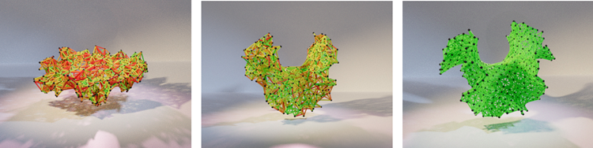
Figure 3: A spring system encoding the geometry of a hyperbolic disk converging to an embedding from left
to right. Springs are colored red (poor) to green (good) depending on how well their length
matches the corresponding hyperbolic length.
図3：双曲円盤の幾何学的構造を表現するバネ系が、左から右へと埋め込みへと収束していく様子。バネは、その長さが対応する双曲距離とどの程度一致しているかに応じて、赤（不適合）から緑（適合）へと色分けされている。
We now make the method precise. Let \(𝐺 = (𝑉, 𝐸)\) be the edge graph (1-skeleton) of a mesh. An
embedding of the mesh is a map
ここで、この手法を厳密に定義します。\(G = (V, E)\) をメッシュの辺グラフ（1-スケルトン）とします。メッシュの埋め込みとは、ある写像のことです。
\[
𝑥 : 𝑉 → \mathbb{R}^3, \quad 𝑖 ↦ 𝑥_𝑖,
\]
assigning a position \(𝑥_𝑖 ∈ \mathbb{R}^3\) to each vertex \(𝑖 ∈ 𝑉\). The intrinsic geometry of the source surface determines
a target length \(ℓ_{𝑖 𝑗} \gt 0\) for each edge \((𝑖, 𝑗) ∈ 𝐸\). Our goal is to find an embedding 𝑥 such that the Euclidean
edge lengths \(∥𝑥_𝑖 −𝑥_ 𝑗||\) match these prescribed values. We formulate this as an energy minimization problem.
The primary term is a Hookean spring energy
各頂点 \(𝑖 ∈ 𝑉\) に位置 \(𝑥_𝑖 ∈ \mathbb{R}^3\) を割り当てます。ソースサーフェスの固有の幾何学により、各エッジ \((𝑖, 𝑗) ∈ 𝐸\) に対して、
目標長さ \(ℓ_{𝑖 𝑗} \gt 0\) が決定されます。私たちの目標は、ユークリッド
エッジの長さ \(∥𝑥_𝑖 −𝑥_ 𝑗||\) がこれらの規定値と一致するような埋め込み 𝑥 を見つけることです。これをエネルギー最小化問題として定式化します。
主要な項はフックの法則に従うバネエネルギーです。
\[
𝐸_{spring} (𝑥) =\frac{1}{2}\sum_{(𝑖, 𝑗) ∈𝐸} 𝑘_{𝑖𝑗}\big(∥𝑥_𝑖 − 𝑥_𝑗|| − ℓ_{𝑖𝑗}\big)^2,
\]
where \(𝑘_{𝑖𝑗} \gt 0\) are stiffness parameters. To discourage self-intersections, we include a Coulomb repulsion
term
ここで、\(𝑘_{𝑖𝑗} \gt 0\) は剛性パラメータです。自己交差を抑制するために、クーロン反発項を含めます。
\[
𝐸_{rep} (𝑥) = 𝑘_𝐶\sum_{𝑖\lt 𝑗}\frac{𝑞_𝑖 𝑞_𝑗}{∥𝑥_𝑖 − 𝑥_𝑗||},
\]
where \(𝑞_𝑖\) are vertex charges. In some scenes, we additionally incorporate optional gravity and positional
constraints (e.g., fixed or pinned vertices). The total energy is
ここで、\(𝑞_𝑖\)は頂点電荷です。一部のシーンでは、オプションの重力と位置制約（例えば、固定またはピン留めされた頂点）も追加で組み込みます。総エネルギーは
\[
𝐸(𝑥) = 𝐸_{spring} (𝑥) + 𝐸_{rep} (𝑥) (+ \text{optional terms}),
\]
and is minimized numerically. Starting from an initial embedding \(𝑥^{(0)}\) (e.g., a perturbed Poincare disk layout, ´
a cylinder, or a flat grid), we iteratively update vertex positions using gradient descent or damped second-order
dynamics until convergence of the edge-length residuals. For example, the update rule for gradient descent is
そして、数値的に最小化されます。初期埋め込み \(𝑥^{(0)}\) (例えば、摂動ポアンカレ円盤レイアウト、円筒、または平面グリッド) から始めて、エッジ長残差が収束するまで、勾配降下法または減衰二次ダイナミクスを使用して頂点位置を反復的に更新します。例えば、勾配降下法の更新規則は次のようになります。
\[
𝑥^{(𝑡+1)} = 𝑥^{(𝑡)} − 𝜂 ∇𝐸(𝑥^{(𝑡)}),
\]
with step size \(𝜂 > 0\). The framework is flexible with respect to mesh type, and we use both triangle and quad
meshes. For quad meshes, we add diagonal (shear) and longer-range (bend) springs to stabilize the mesh
embedding. For fixed initialization and parameters the procedure is deterministic, though some examples
introduce small random perturbations or stochastic updates. The main user-controlled parameters are mesh
resolution, stiffness coefficients, repulsion strength, time step, and iteration count.
ステップサイズは \(𝜂 > 0\) とします。このフレームワークはメッシュの種類に対して柔軟であり、三角形メッシュと四角形メッシュの双方を使用します。四角形メッシュの場合、メッシュの埋め込みを安定させるために、対角方向の（せん断用）バネと、より長距離に作用する（曲げ用）バネを追加します。初期化条件やパラメータを固定した場合、この手順は決定論的に動作しますが、例によっては、わずかなランダム摂動や確率的な更新が導入されることもあります。ユーザーが主に制御可能なパラメータには、メッシュ解像度、剛性係数、斥力の強さ、タイムステップ、および反復回数があります。
Many models of hyperbolic space have been developed, from the aforementioned Beltrami-Klein and Poincare´
disks to the upper half-plane, the hyperboloid and beyond. Each has its uses: the upper half-plane simplifies
certain calculations, the hyperboloid lets us use linear algebra. However, they all drastically distort size.
Embedded meshes complement these by making visible what models obscure.
双曲空間のモデルは、前述のベルトラミ・クライン・モデルやポアンカレ円板モデルをはじめ、上半平面モデル、双曲面モデルなど、数多く開発されてきました。それぞれに利点があり、例えば上半平面モデルは特定の計算を簡略化し、双曲面モデルは線形代数の利用を可能にします。しかし、いずれのモデルも大きさ（面積や距離）を著しく歪めてしまいます。埋め込みメッシュは、こうしたモデルでは見えにくくなってしまう要素を可視化することで、それらを補完する役割を果たします。
Figure 4 shows concentric disks of hyperbolic radius 1, 2, 3, and 4 in several models. In each, the
disks appear to grow modestly—approaching the boundary in the disk models, climbing the hyperboloid,
stretching asymmetrically in the half-plane. But hyperbolic area grows exponentially: a disk of radius 𝑟 has
area \(2𝜋(\cosh(𝑟) − 1) \approx 𝜋𝑒^𝑟\) compared to \(𝜋𝑟^2\)
in Euclidean space. The disk of radius 4 is 48 times as large as
the disk of radius 1! None of the models make this visible. But embedded in \(\mathbb{R}^3\), explosive growth is clear.
図4は、いくつかのモデルにおける双曲半径1、2、3、4の同心円板を示しています。それぞれのモデルにおいて、円板は緩やかに大きくなっているように見えます。円板モデルでは境界に近づき、双曲面モデルでは曲面を登り、半平面モデルでは非対称に引き伸ばされるといった具合です。しかし、双曲幾何における面積は指数関数的に増大します。半径 𝑟 の円板の面積は \(2𝜋(\cosh(𝑟) − 1) \approx 𝜋𝑒^𝑟\) であり、ユークリッド空間における面積 \(𝜋𝑟^2\) とは対照的です。半径4の円板は、半径1の円板の48倍もの大きさがあるのです！どのモデルを見ても、このことは一目では分かりません。しかし、\(\mathbb{R}^3\) に埋め込んでみると、その爆発的な増大ぶりがはっきりと見て取れます。
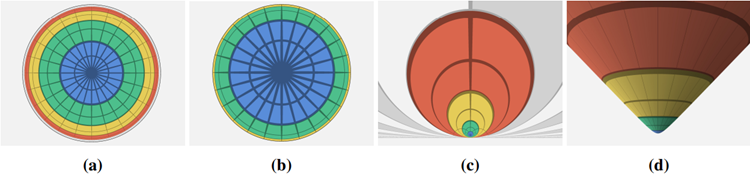
Figure 4: Concentric hyperbolic disks of radius 1 (blue), 2 (green), 3 (yellow), and 4 (red), shown in (a) the
Poincare disk, (b) the Beltrami-Klein disk, (c) the upper half-plane, ´
and (d) the hyperboloid model.
図4：半径1（青）、2（緑）、3（黄）、4（赤）の同心双曲円板。(a) ポアンカレ円板、(b) ベルトラミ・クライン円板、(c) 上半平面、(d) 双曲面モデルにおける様子。
The exponential growth of hyperbolic space causes real qualitative differences from Euclidean geometry
(Figure 9 in Appendix B). Consider a geodesic (the hyperbolic analog of a straight line) and the strip of
points within some fixed distance of it. In Euclidean space this is just a rectangle: a strip of paper with
the line down the center. In hyperbolic space, the curve at distance 𝑑 from the geodesic is cosh(𝑑) times
longer than the geodesic itself. The strip contains exponentially more material than its Euclidean counterpart.
In the Poincare disk this region appears as a lens or banana, seeming to contract toward the boundary; the ´
exponential growth is invisible. Embedded in \(\mathbb{R}^3\)
, the strip ruffles and buckles to accommodate its true area.
双曲空間における指数関数的な広がりは、ユークリッド幾何学とは本質的に異なる性質をもたらします（付録Bの図9を参照）。ある測地線（ユークリッド空間における直線に相当するもの）と、そこから一定の距離以内にある点の集合からなる帯状の領域を考えてみましょう。ユークリッド空間において、これは単なる長方形、すなわち中央に線が引かれた紙の帯のような形になります。一方、双曲空間では、測地線から距離 \(d\) だけ離れた位置にある曲線は、測地線そのものの長さの \(\cosh(d)\) 倍もの長さになります。そのため、この帯状の領域は、ユークリッド空間における対応する領域よりも、指数関数的に多くの「広がり（面積）」を含んでいることになります。ポアンカレ円板モデル上では、この領域はレンズやバナナのような形に見え、境界に向かって収縮しているように感じられるため、その指数関数的な広がりを視覚的に捉えることはできません。しかし、これを \(\mathbb{R}^3\)（3次元ユークリッド空間）内に埋め込むと、その本来の面積を収めるために、帯は波打ったり折れ曲がったり（座屈したり）することになります。
Similarly stark is the behavior of parallel geodesics. In Euclidean space, parallel lines remain a fixed
distance apart forever. In hyperbolic space, geodesics that start parallel are drawn apart exponentially quickly.
The models show this divergence, but an embedding makes visceral just how fast space is growing between
them.
平行な測地線の振る舞いも、同様に際立った対照を見せます。ユークリッド空間では、平行線は常に一定の距離を保ち続けます。一方、双曲空間では、平行に始まった測地線同士は、指数関数的な速さで互いに引き離されていきます。モデルでもこの乖離は示されますが、空間への埋め込みを行うことで、それらの間の空間がいかに急速に拡大しているかを、直感的に実感できるようになります。
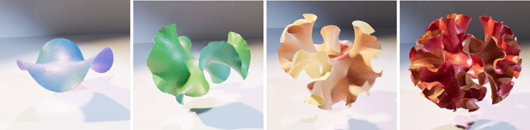
Figure 5: Hyperbolic disks of radius 1 (blue), 2 (green), 3 (yellow), and 4 (red), embedded in Euclidean
space. Compare with Figure 4.
図5：ユークリッド空間に埋め込まれた、半径1（青）、2（緑）、3（黄）、4（赤）の双曲円板。図4と比較せよ。
Hyperbolic forms appear throughout the natural world. The ruffled edges of a lettuce leaf, the undulating
fronds of kelp, the wrinkled surface of a coral, and the fluttering mantle of a cuttlefish are examples of such
forms. All exhibit the characteristic buckling of surfaces with too much area to lie flat. This is no coincidence:
biological growth often proceeds by adding material proportional to what is already there, and such processes
lead inexorably to exponential expansion. The geometry discovered by Bolyai and Lobachevsky to probe the
foundations of Euclid turns out to be encoded in organisms that have never heard of the parallel postulate.
自然界の至る所で、双曲的な形状を目にすることができます。レタスの葉の波打つ縁、うねるような昆布の葉状体、サンゴの皺（しわ）の寄った表面、そしてコウイカがひらめかせる外套膜などは、そうした形状の例です。これらはすべて、表面積が大きすぎて平らな状態を保てなくなった際に生じる「座屈（ざくつ）」という現象を特徴としています。これは決して偶然ではありません。生物の成長はしばしば、既存の組織に比例した量の物質を付け加える形で進みますが、そうしたプロセスは必然的に指数関数的な拡大をもたらすからです。ユークリッド幾何学の基礎を検証しようとしたボヤイやロバチェフスキーによって発見された幾何学の原理は、実は、「平行線公理」など聞いたこともないはずの生物たちの体の中に組み込まれていたのです。
This connection is both beautiful and useful. Organic forms like these are difficult to model directly: no
simple equation describes the edge of a lettuce leaf, and manually sculpting convincing ruffles is painstaking
work. But an artist or designer seeking such forms can simply specify a hyperbolic mesh and embed it.
The geometry does the work: energy minimization produces natural-looking ruffles automatically, without
hand-tuning. The iterative optimization mirrors, in a poetic sense, the iterative process by which organisms
grow: local adjustments accumulating into global form. Figure 6 shows examples from nature alongside a
rendered scene built from embedded hyperbolic meshes. The coral is modeled not by artistic intuition but by
geometry.
このつながりは、美しさと実用性を兼ね備えています。レタスの葉の縁を単純な数式で表すことはできず、説得力のあるひだを手作業で造形するのも骨の折れる仕事であるため、こうした有機的な形状を直接モデリングするのは困難です。しかし、そのような形状を求めるアーティストやデザイナーは、単に双曲メッシュを指定して埋め込むだけで済みます。形状そのものが処理を担い、エネルギー最小化によって、手作業での微調整なしに自然な見た目のひだが自動的に生成されるのです。この反復的な最適化プロセスは、局所的な調整の積み重ねによって全体的な形状が形成されるという、生物の成長過程を詩的な意味で反映したものと言えます。図6には、自然界の例と、埋め込まれた双曲メッシュから構築されたレンダリング画像が並べて示されています。ここで描かれているサンゴは、芸術的な直感ではなく、幾何学的な計算に基づいてモデリングされたものです。
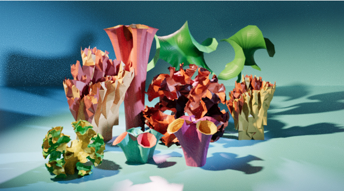
Figure 6: An artistic render using hyperbolic geometry to model natural forms in
a low-poly coral reef scene.
図6：ローポリゴンのサンゴ礁のシーンにおいて、双曲幾何学を用いて自然の形態を表現した芸術的なレンダリング画像。
But geometry alone determines only shape, not orientation. In naturalistic art and design, the surface
must be a participant in the world, responding to its environment: lettuce grows outward from its core,
fabric hangs downward under gravity, and coral reaches for the light. The energy minimization framework
accommodates this naturally. We can add terms beyond edge lengths: adding a gravitational potential 𝑚𝑔ℎ
makes surfaces drape and settle. Adding pinning and collision constraints lets them hang from chosen points,
rest on floors, or wrap around other objects. Figure 10 (Appendix B) shows a hyperbolic cylinder embedded
without gravity (left) and with a gravitational term (center). The second hangs like the fabric of a ruffled dress. Some of the corals in Figure 6 were also generated this way, hanging a hyperbolic mesh under gravity
and then rotating to upward-reaching forms.
しかし、幾何学的形状だけでは「形」は決まっても「向き」までは決まりません。写実的な芸術やデザインにおいて、表面は周囲の環境に呼応し、その世界の一部として振る舞う必要があります。例えば、レタスは芯から外側に向かって成長し、布地は重力に従って垂れ下がり、サンゴは光を求めて伸びていきます。「エネルギー最小化」という枠組みは、こうした挙動を自然に扱えるものです。単に辺の長さを考慮するだけでなく、他の要素（項）を追加することも可能です。例えば、重力ポテンシャル項 \(mgh\) を加えれば、表面は重力に従って自然に垂れ下がり、落ち着いた形状になります。また、固定点や衝突に関する制約条件を加えれば、特定の点から吊り下げたり、床に置いたり、あるいは他の物体に巻き付かせたりすることもできます。図10（付録B）は、重力の影響なしに配置された双曲円筒（左）と、重力項を加えて配置された双曲円筒（中央）を示しています。後者は、フリルのついたドレスの布地のように垂れ下がった形状になっています。図6に示したサンゴの一部も同様の手法で生成されました。具体的には、双曲メッシュを重力下で垂れ下がらせた後、上に向かって伸びるような形状になるよう回転させることで作成されています。
These techniques extend beyond modeling natural forms to design. Figure 7 shows a hyperbolic cylinder
rendered as a paper lantern. The intrinsic geometry alone produces its intricate form.
これらの技術は、自然形態のモデリングにとどまらず、デザインにも応用されています。図7は、双曲円柱を紙提灯として表現したものです。その複雑な形状は、本来の幾何学的形状だけで生み出されています。
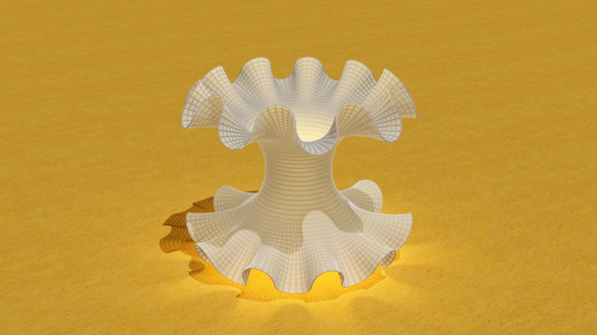
Figure 7: An embedded hyperbolic cylinder, rendered as a paper lantern with internal lighting.
図7：内部から照明を当てた提灯のようにレンダリングされた、埋め込み双曲柱面
We use our models, as renders or 3D prints, in research talks, public outreach events, school visits, art
exhibits, and even as holiday postcards—among other settings. At talks, for example, displaying a render and
rotating around a 3D model brings to life what flat models of hyperbolic geometry obscure: non-intersecting
lines diverge, circles expand faster, and there is simply more space than Euclidean intuition predicts. At public
events (Figure 8), 3D prints and paper models invite hands-on exploration. Visitors can hold an embedding
of a hyperbolic surface and see that its buckling is not decorative but necessary, the only way to fit the extra
area into three-dimensional space. Producing some of these models has taken place as part of student and
research projects, where building the embeddings requires engaging with both the underlying geometry and
its computational implementation.
私たちは、レンダリング画像や3Dプリントといった形で作成したモデルを、研究発表、一般向けアウトリーチ活動、学校訪問、美術展、さらには祝日のグリーティングカードなど、さまざまな場面で活用しています。例えば講演の際、レンダリング画像を表示したり3Dモデルを回転させたりすることは、双曲幾何学の平面的なモデルでは捉えにくい性質を鮮明に浮かび上がらせます。すなわち、交わらない直線が互いに離れていく様子や、円がより急速に拡大する様子、そしてユークリッド幾何学的な直感から予想されるよりもはるかに広い空間が広がっていることなどが、視覚的に理解できるようになるのです。一般向けのイベント（図8）では、3Dプリントや紙製のモデルを実際に手に取って観察してもらうことができます。来場者は、双曲面を空間に埋め込んだモデルを手に持ち、その表面の「うねり」や「ひだ」が決して装飾的なものではなく、余分な面積を3次元空間に収めるために不可欠な構造であることを実感できるでしょう。こうしたモデルの制作は、学生や研究者のプロジェクトの一環として行われることもあり、その過程では、対象となる幾何学的構造の理解と、それをコンピュータ上で具現化する技術の両方に向き合うことが求められます。
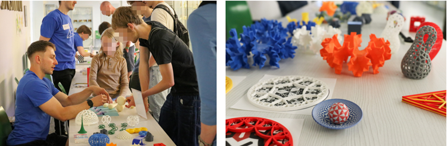
Figure 8: The first and second authors showcasing 3D-printed hyperbolic models at the Long Night of the
Sciences, Leipzig University, 2025.
図8：2025年、ライプツィヒ大学の「科学の長い夜（Long Night of the Sciences）」にて、3Dプリントされた双曲幾何モデルを披露する第1著者と第2著者。
We have shown how mesh embeddings can be used to visualize hyperbolic surfaces in Euclidean space,
producing visualizations for illustration, art, and outreach. Future work could extend this work in several
directions: producing illustrations of hyperbolic surfaces arising in research, embedding surfaces of higher
genus, and exploring physical fabrication beyond 3D printing, such as fabric or paper templates.
本研究では、メッシュ埋め込みを用いてユークリッド空間内で双曲曲面を可視化し、図解、芸術、アウトリーチ活動に活用できる可視化表現を生成する方法を示しました。今後の展望として、研究の過程で現れる双曲曲面の図解作成、より高い種数を持つ曲面の埋め込み、そして3Dプリンティング以外の物理的な製作手法（布や紙の型紙など）の検討といった、いくつかの方向への発展が考えられます。
This work was carried out at the Mathematics Lab at the Max Planck Institute for Mathematics in the Sciences
in Leipzig, Germany. The authors additionally acknowledge support of the Institut Henri Poincare (UAR 839 ´
CNRS-Sorbonne Universite), and LabEx CARMIN (ANR-10-LABX-59-01). AI-assisted tools were used for ´
minor editing tasks, including phrasing and clarity improvements. We sincerely thank the reviewers for their
valuable comments and suggestions, which significantly improved the clarity and quality of this manuscript.
本研究は、ドイツ・ライプツィヒにあるマックス・プランク数学研究所（Max Planck Institute for Mathematics in the Sciences）の数学研究室にて実施されました。また、著者はアンリ・ポアンカレ研究所（Institut Henri Poincare: UAR 839 CNRS-Sorbonne Universite）およびLabEx CARMIN（ANR-10-LABX-59-01）からの支援に感謝の意を表します。表現の調整や明瞭化といった軽微な編集作業には、AI支援ツールが使用されました。本稿の明瞭さと質を大幅に向上させてくださった査読者の皆様の貴重なご意見とご提案に、心より感謝申し上げます。
The construction process for the models in Figure 6 is illustrated in Figures 9 and 10. In each case, we
begin with a region of the hyperbolic plane (such as a strip or disk), discretize it as a mesh with edge lengths
determined by the intrinsic metric, and compute an embedding in R
3 via the spring-based optimization
described above. Throughout, we use well-known analytic expressions for constructing circles, geodesics,
and horocycles, and for computing distances in the hyperbolic plane. The resulting surfaces are then rendered
with simple geometric or artistic interpretations, producing the forms shown in Figure 6.
図6のモデルを構築する手順を、図9および図10に示します。いずれの場合も、まず双曲平面上の領域（帯状や円板状の領域など）を対象とし、その領域を、固有の計量に基づいて辺の長さが決定されるメッシュへと離散化します。そして、前述のバネモデルを用いた最適化手法により、そのメッシュを3次元空間（\(\mathbb{R}^3\)）へ埋め込みます。この一連の過程では、円、測地線、ホロサイクル（極限円）の構成や、双曲平面上での距離の計算において、よく知られた解析的な式を用いています。最後に、得られた曲面を単純な幾何学的あるいは芸術的な解釈を加えてレンダリングすることで、図6に示すような形状が生成されます。
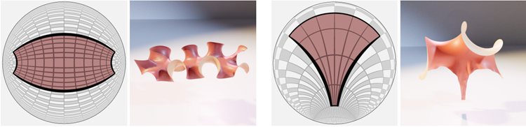
Figure 9: A strip of points within a fixed distance to a geodesic in the hyperbolic plane, left. A spray of
geodesics all initially parallel, right.
図9：左は、双曲平面上の測地線から一定の距離以内にある点の帯。右は、すべて最初は平行な測地線の束。
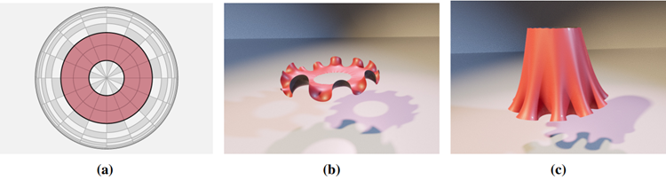
Figure 10: A ruffled dress modeled with hyperbolic geometry: (a) the initial region in the Poincare disk, (b) ´
the embedded mesh without gravity, (c) the embedded mesh, relaxed under gravity.
図10：双曲幾何学を用いてモデル化されたフリル付きドレス：(a) ポアンカレ円板上の初期領域、(b) 重力の影響を受けない埋め込みメッシュ、(c) 重力下で緩和された埋め込みメッシュ。
In this appendix, we include a selection of early experimental renderings not shown in the main text. These
include a (2, 3, 7) triangular tiling of the hyperbolic disk (Figure 11), a hyperbolic strip interpreted as a sea
slug (Figure 12), and a hyperbolic cylinder interpreted as a Japanese paper lantern (Figures 13 and 7). These
examples reflect the authors’ early exploratory and creative process in developing the models for this work.
本付録には、本文では紹介しなかった初期の実験的なレンダリング画像をいくつか掲載します。これらには、双曲円板の(2, 3, 7)三角形タイル張り（図11）、ウミウシに見立てた双曲ストリップ（図12）、そして日本の提灯に見立てた双曲円筒（図13および図7）が含まれます。これらの例は、本研究のモデルを開発する過程における、著者らの初期の試行錯誤や創造的なプロセスを反映したものです。
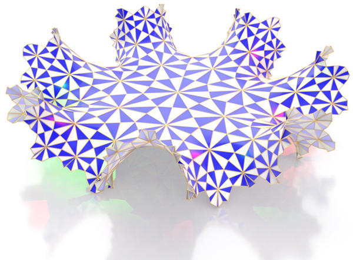
Figure 11: An embedding of a portion of a (2, 3, 7) triangular tiling of the hyperbolic disk.
図11：双曲円板上の(2, 3, 7)三角形タイリングの一部の埋め込み。
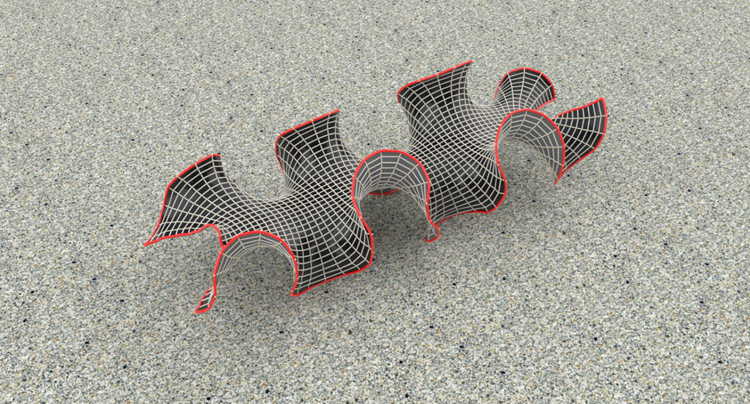
Figure 12: An embedded hyperbolic strip, rendered as a sea slug against a terrazzo floor.
図12：埋め込まれた双曲面状の帯。テラゾーの床を背景に、ウミウシのような姿で表現されている。
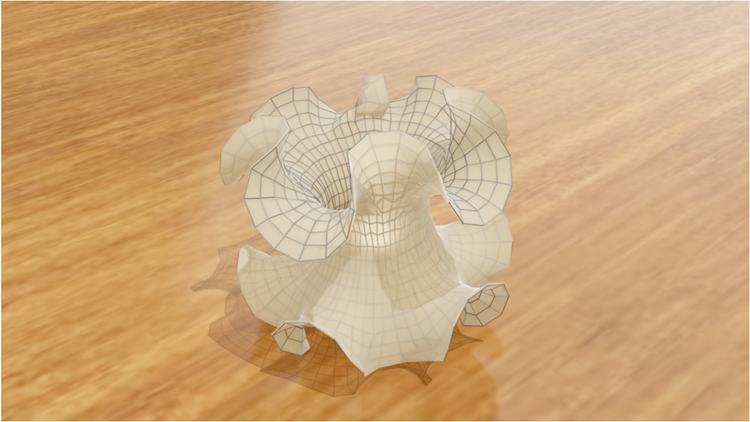
Figure 13: An embedded low-poly hyperbolic cylinder, rendered as a paper lantern with internal lighting.
The optimization was terminated before full convergence.
図13：内部照明を備えた提灯のようにレンダリングされた、埋め込み型のローポリゴン双曲円柱。
最適化は、完全な収束に至る前に終了させた。